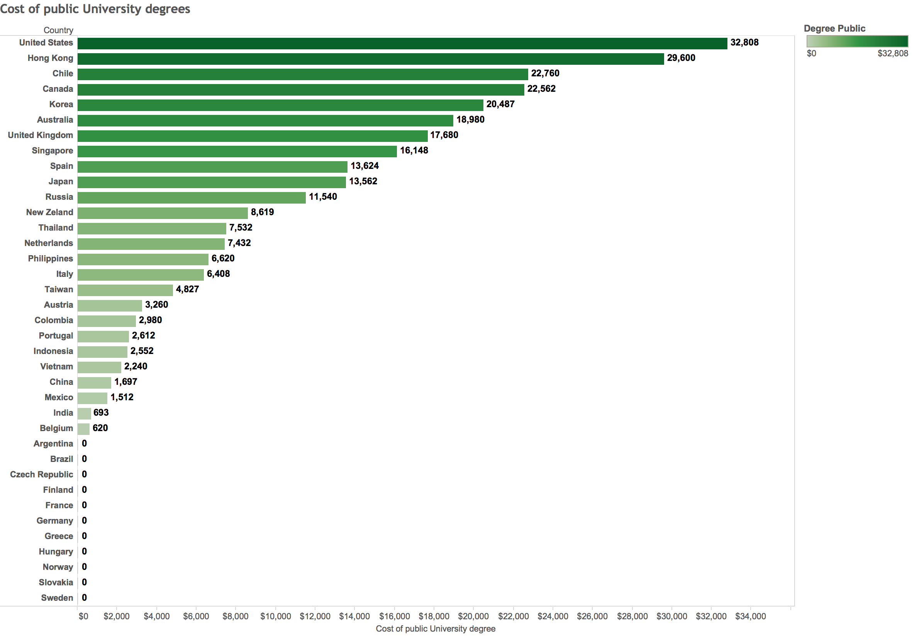
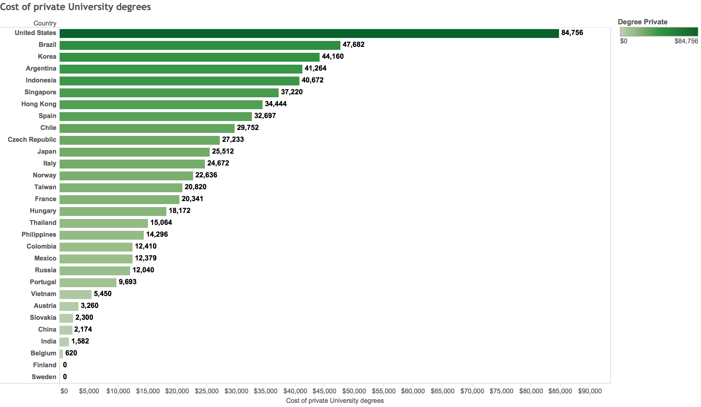
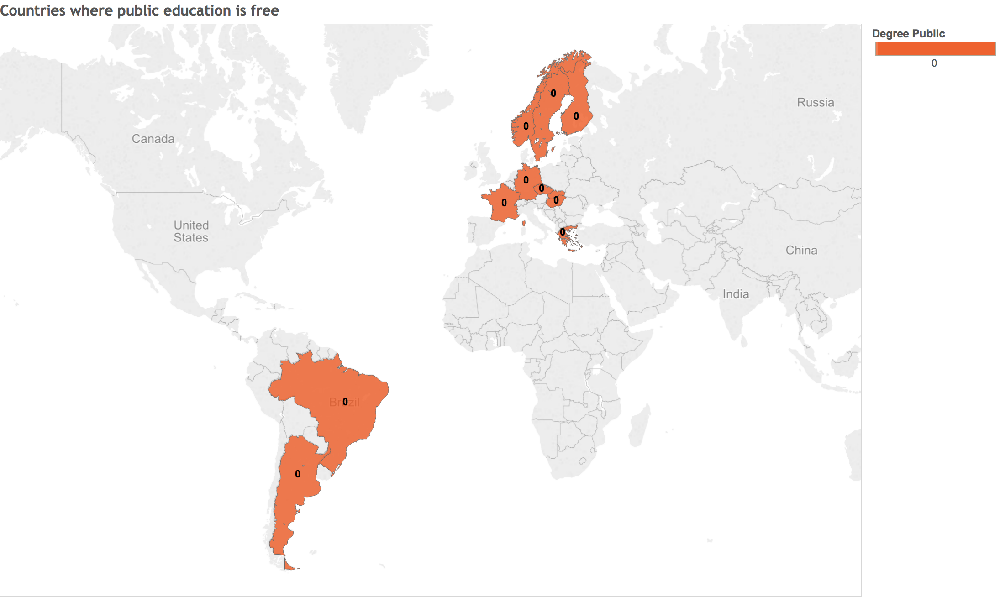
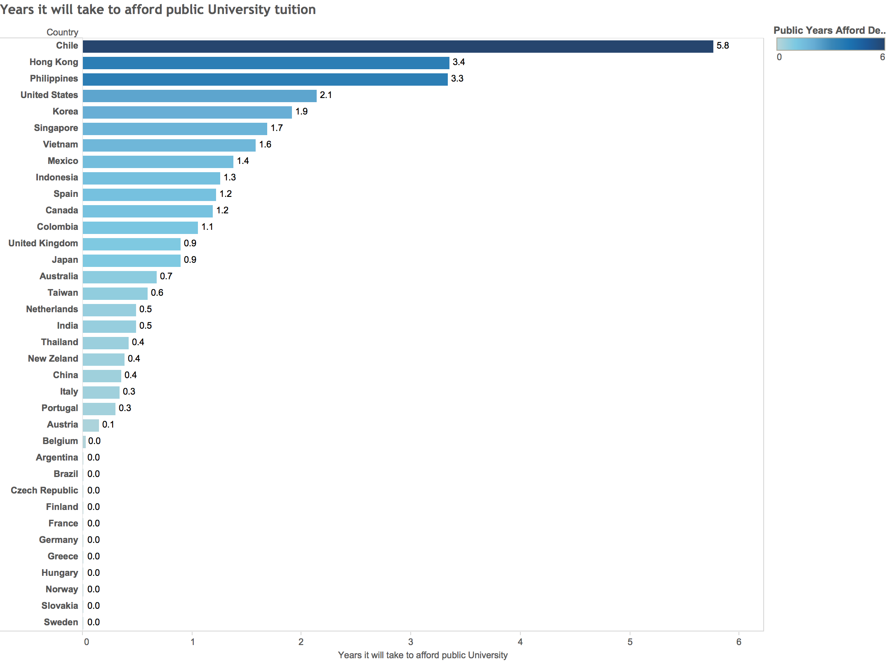
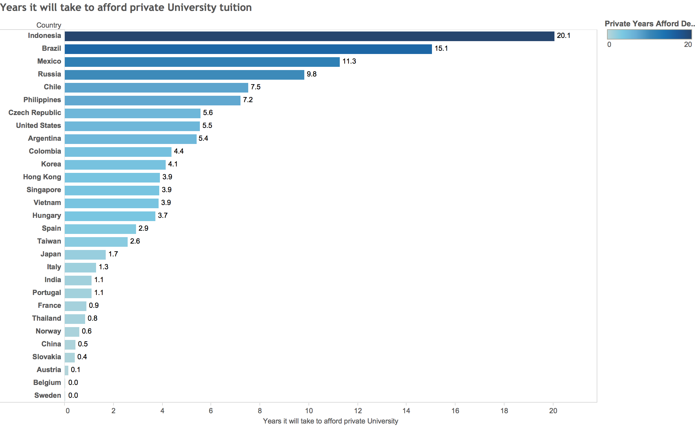
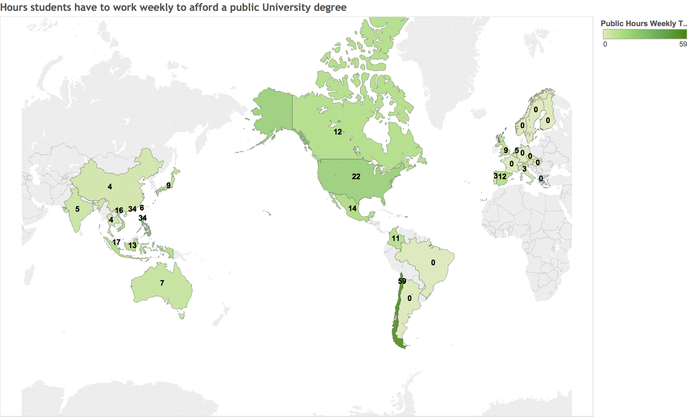
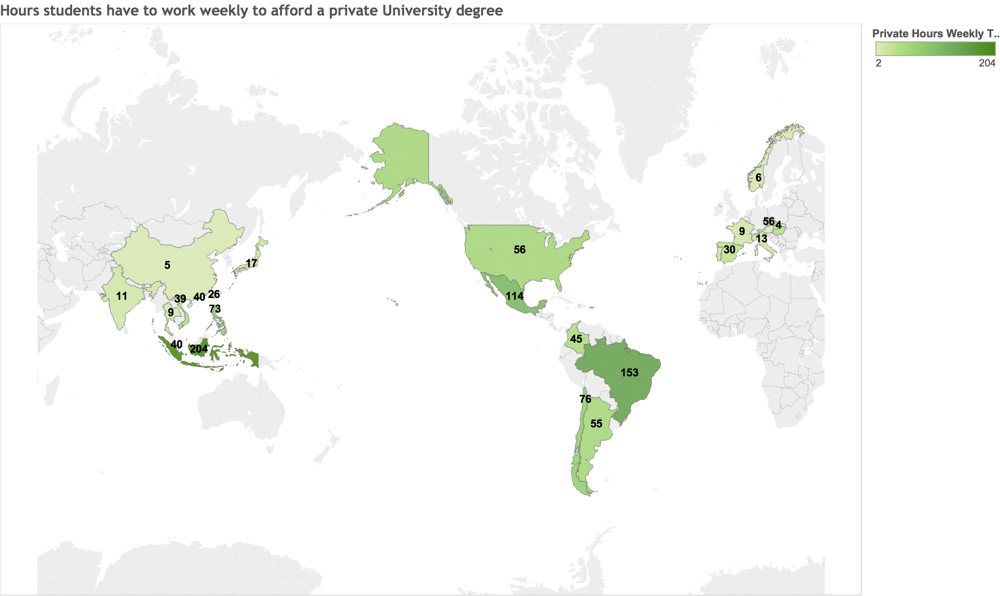
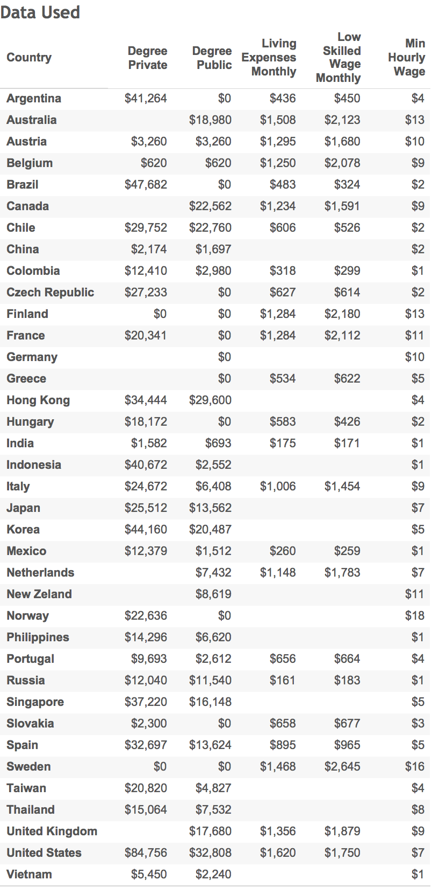

In some parts of the world, University education is free. In other parts of the world, tuition is quite costly but largely subsidized by the government through financial aid. In the worst cases, higher education is not affordable for the average citizen, and obtaining financial help is a nightmare.
Is education really a basic right or is it something only the privileged can enjoy?
We found out how long students have to work to pay off education in 40 different countries. We also figured out if students can work part-time while studying to save for tuition.
It is important to note that students can take out loans, get government grants and scholarships to afford education. In this study, we didn't take this into account and made the worst possible case scenario.
Picture a girl named Sophie. She can't get government aid because her parents make too much money but don't want to pay for her education. She can't take out loans because she can't get a cosigner and had a falling out with her family. She also can't get a high paying job because every employer requires a degree. Her only option is to work at a grocery store for minimum wage and save up money to go to school.
What is the best country in the world for Sophie to be born in if she wants to go to University?
How much does a University degree cost in 40 countries?
If we just look at the cost of education alone, without factoring in minimum wage or how long a student has to save to afford it - United States turns out to be the absolutely worst country to go to school in.
Cost of public University degrees

Public University costs more in United States than in any of the other 40 countries.
Cost of private University degrees

Private University education in United States costs almost double the price of the 2nd most expensive country.
Our hypothetical student, Sophie, can get 3 separate private University degrees from France, Japan and Hong Kong before she can get a University education in the United States.
Get a public University degree for free

If you are born in most of the European countries you are in luck! University is free.
How many years does it take to save for tuition?
It is common for students that don't have money right away to work for a few years and save up for University. How many years do students in different countries have to work to save up? We are assuming students are working for minimum wage at a low skilled job.
Years it will take to afford public University tuition

In 70% of countries we studied students only have to work a year or less before paying off their entire degree.
Out of all developed countries, students in the United States and Hong Kong have to work the longest to afford public education. Students in the US have to work for 2.1 years to save up for tuition only.
Years it will take to afford private University tuition

Countries in Asia require students to work longer to save up for private education than countries in Europe. Given the minimum wage, education is quite affordable in China, India, Taiwan and Thailand. Students have to work for less than half a year to pay off their tuition.
Even though tuition costs are the highest in United States than anywhere else in the world, students don't have to work the longest amount of time to save up. The minimum hourly wage in some countries makes it impossible to save for education - for example Indonesia, Brazil, Mexico, Russia, Chile, Philippines.
It will still take 5.5 years for a student working minimum wage to pay off tuition in the US.
How many hours a week do students have to work?
Let's say a student wants to work while studying to pay off their tuition. We assumed that the average student will have 208 working weeks during their 4 years at University. How many hours will the students have to work a week to afford education?
Weekly hours required to afford a public University degree

Surprisingly, at the minimum wage of $7.25 students have to work 22 hours a week for 208 weeks to afford a public University degree in United States. If a rich uncle or scholarships cover the living expenses of a student, they can afford higher education by working part-time in the US.
If we are playing the Commonwealth "game" - students in Canada have to work the hardest to afford private education - at 12 hours a week. Followed by, 9 hours a week in the UK, 7 hours a week in Australia and 4 hours a week in New Zeland.
It is impossible to work part-time and pay off public school in the Philippines, Hong Kong and Chile.
Public education in India and China is surprisingly affordable. Well - more affordable than in the United States. Students only have to work 4 or 5 hours a week.
Weekly hours required to afford a private University degree

Students cannot work part time to pay for private tuition in 57% of the countries we studied.
United States isn't the only country where you can't work 20 hours a week to pay off tuition for a private University.
Only the privileged can afford private Universities in Indonesia, Brazil, Mexico, Chile, Philippines, Czech Republic and United States. Unless students get loans, grants of scholarships they have to opt out for public education in more than half of the countries.
Data Used (in USD)

Calculations & Assumptions:
- This study does not take into account scholarships, government grants and other subsidies available to students that are academically excellent or that don't have the means to afford University.
- We found both the public and private cost of University education in 40 different countries. We assumed students will be studying their Bachelor's degree for a 4 years period.
- To find the number of months or years a student has to save for to afford a degree we found 1) the living wage in each country (monthly living expenses) 2) the low skilled wage (monthly amount someone can earn) or when this number was not available we used the monthly minimum wage and 3) education savings (monthly earnings minus monthly expenses). We divided the cost of a private or public degree by the average amount a student can save in a month.
- We assumed the maximum a student can work is 8 hours a day during summer holidays and 20 hours a week (or
4 hours a day during school). We assumed students will have 3 summer breaks while doing a 4 year degree that
last 4 months each. The total hours a student can work while receiving their education is 4928 hours. - The total amount a student can earn during their time at University was found by multiplying 4928 hours by the minimum hourly wage of each country.
- We found out if students can actually afford to pay for both living expenses and education by taking the
difference between the total amount they can earn during 4 years and the total expenses (cost of a degree and
living expenses for 48 months). - To find the number of hours a student has to work a week to afford their degree we divided the degree
cost by 208 weeks (the number of weeks they have in a 4 year degree period), divided by the minimum wage
of the country.
Sources:
- Currency converter - Yahoo - all costs were converted into USD.
- Trading Economics and Wage Indicator were used to find the [low skilled wages],minimum wages and individual living wages.
- ParseHub a web scraping tool was used to collect data easily and quickly.
- Tableau was used to analyze and visualize information.
- A variety of sources were used to calculate the private and public tuition rates for Universities - 1,2,3.
This is just the beginning!
This is just the beginning of a series of blog posts looking at University education around the world. There is more to come! Notice how we didn't take living expenses into account in this study. We left the "real" comparison for our next post where we tell you in which countries it is possible to save for both living expenses and education while working at minimum wage.
Have any interesting stats to share about the state of higher education in the world? The comments are all yours!
Or you can reach out privately at angelina@parsehub.com. Your feedback (and criticism) is absolutely welcome.